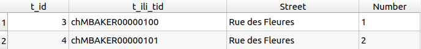
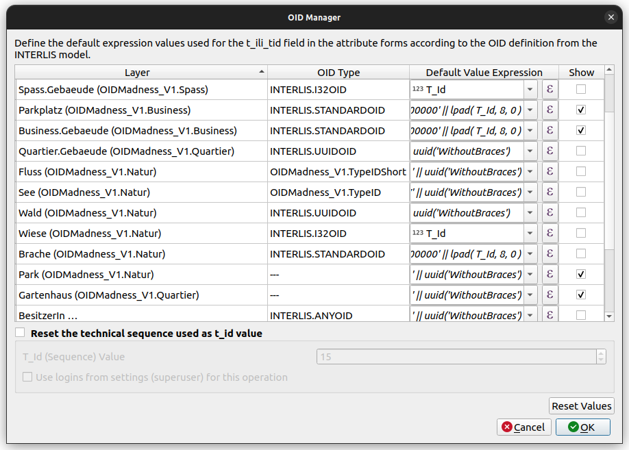

OID Generator
OID, TID, BID, t_ili_tid, tid... Sorry, what?
Often the models definition requires a cross-system unique identifier. The so called OID.
[...]
TOPIC Constructions =
BASKET OID AS INTERLIS.UUIDOID;
OID AS INTERLIS.STANDARDOID;
[...]
In the data transferfile (xtf-file)...
... the OID of the basket is named BID
... the OID of the objects is named TID
<City_V1.Constructions BID="7dc3c035-b281-412f-9ba3-c69481054974">
<City_V1.Constructions.Buildings TID="chMBAKER00000100"><Street>Rue des Fleures</Street><Number>1</Number></City_V1.Constructions.Buildings>
<City_V1.Constructions.Buildings TID="chMBAKER00000101"><Street>Rue des Fleures</Street><Number>2</Number></City_V1.Constructions.Buildings>
In the physical schema...
... those OIDs are written to the column t_ili_tid.
... while the t_id column contains just a schema-internal sequence used for foreign keys etc. Those t_ids are not the cross-system unique identifier.

Note
There are situations when that you can find the t_id as TID in your data. It's when there is no t_ili_tid available ili2db could use. But be aware those TIDs are not stable OIDs then.
OID Domains
There are different types of OID domains. In Model Baker we try to set default values that fit into the definition.
- UUIDOID
- I32OID
- STANDARDOID
- ANYOID
- user-defined OID
UUIDOID
It's defined as OID TEXT*36 and needs to be an Universally Unique Identifier (UUID). While the probability that a UUID will be duplicated is not zero, it is generally considered close enough to zero to be negligible.
In the QGIS Project the default value expression for t_ili_tid is therefore this:
uuid('WithoutBraces')
I32OID
It's defined as OID 0 .. 2147483647 what means it needs to be a positive 4 byte integer value.
As a counter we take the one provided by the t_id sequence.
In the QGIS Project the default value expression for t_ili_tid is therefore this:
t_id
STANDARDOID
It's defined as OID TEXT*16 and follows some specific requirements.
It requires an 8 char prefix and 8 char postfix:
-
Prefix (2 + 6 chars): Country identifier + a global identification part. The global identification part can be ordered from the official authority
-
Postfix (8 chars): Sequence (numeric or alphanumeric) of your system as local identification part
Model Baker does not know what your global identification part is and uses a placeholder-prefix %change%. It's important that you replace this part with your own prefix.
As local identification part Model Baker suggests the counter provided by the t_id sequence.
In the QGIS Project the default value expression for t_ili_tid is therefore this:
'%change%' || lpad( T_Id, 8, 0 )
ANYOID
The ANYOID does not define a format of the OID but just that an OID needs to be defined in all the extended models. This domain is only used on topics that need to be extended. This solution has some limitations.
User-defined OIDs and not defined OIDs
For user-defined OIDs or when OIDs are not defined, Model Baker tries to suggest something reasonable.
If there is no definition with OID AS, ili2db assumes TEXT and therefore identifiers need to fulfill the rules of the XML-ID-type. This means the first character must be a letter or underscore, followed by letters, numbers, dots, minus signs, underscores; no colons (!), see www.w3.org/TR/REC-xml.
In the QGIS Project the default value expression for t_ili_tid therefore is:
'_' || uuid('WithoutBraces')
Summary
| OID domain | Suggested default value expression |
|---|---|
| INTERLIS.UUIDOID | uuid('WithoutBraces') |
| INTERLIS.I32OID | t_id |
| INTERLIS.STANDARDOID | '%change%' || lpad( t_id, 8, 0 ) |
| INTERLIS.ANYOID | '_' || uuid('WithoutBraces') |
| City_V1.TypeID | '_' || uuid('WithoutBraces') |
| not defined | '_' || uuid('WithoutBraces') |
OID Manager
Since the user has to be able to edit those values, they are provided in the GUI.
Additionally to the page implemented in the wizard the configuration of the OIDs can be made on existing QGIS Projects.
Find the OID Manager via the Database > Model Baker menu.

Here you can use the QGIS Expression Dialog to edit the default value expression for the t_ili_tid field of each layer.
If you want to have the t_ili_tid exposed to the form, you can select Show.
If you need a counter in the expressions, you can use the t_id field, that has a schema-wide sequence counting up. This sequence can be reset as well by the user, but be careful not to set it lower than already existing t_ids in your project. See below the limitations.
Limitations
This solution covers a lot, but not everything.
ANYOID
If a class is part of a topic with an OID definition of ANYOID and it's extended in multiple other topics with other OID definitions, we cannot say what should be the default value, since it could divert depending in what basket you work.
OIDs on another system
When the OIDs are not UUIDs but e.g. STANDARDOIDs instead, it's not possible to know in a system, wheter in other systems the same OIDs are generated. This means it's in the users responsibility to set the expressions (and the counters) in a way that they don't conflict with OIDs of objects generated somewhere else.
T_Id conflicts
When resetting the T_Id (Sequence) value one needs to be careful, because it's used for the technical sequence id (used for foreign keys etc.) as well. This means it should not conflict with the t_ids of objects already existing. That's why it should only be decreased if you really know what you are doing.
The conflicts are handled differently depending on the database system. On PostgreSQL you would encounter a duplicate key violation while on GeoPackage it would take the next available autogenerated t_id, but since it's not known on creating the OID it would break those values (e.g. write to it chMBakerAutogene instead of e.g. chMBaker00000042.)